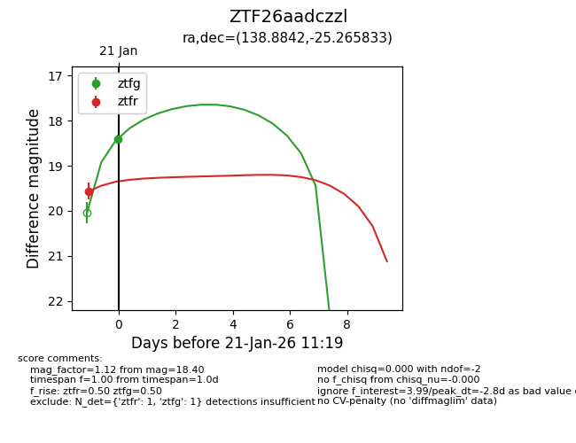
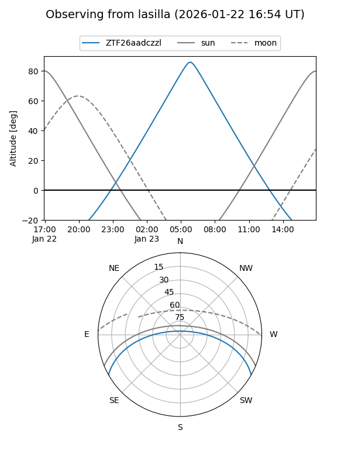
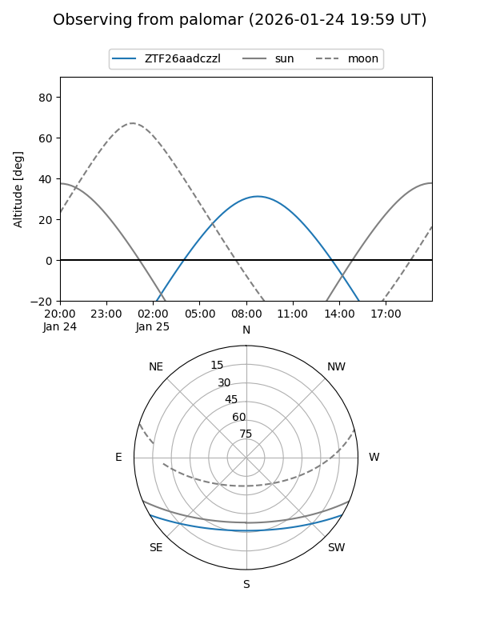
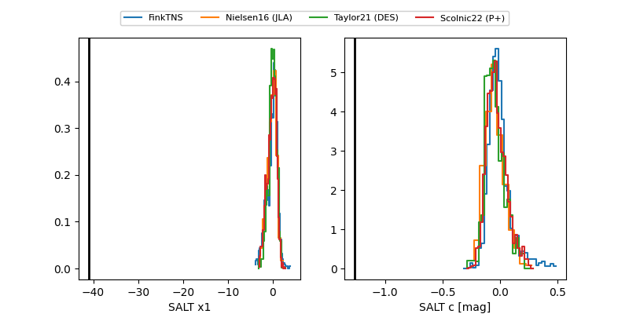

ZTF26aadczzl
Target ZTF26aadczzl at 2026-01-23 11:21
Aliases and brokers:
FINK: link
Lasair: link
ALeRCE: link
alt names
ZTF26aadczzl (ztf,fink_ztf)
Coordinates:
equatorial (ra, dec) = 138.8842,-25.26583
equatorial (HMS+DMS) = 09:15:32.21,-25:15:57.00
galactic (l, b) = (253.3284,+16.18484)
Flags:
Photometry:
last ztfg=18.40, ztfr=18.37
1 ztfg, 2 ztfr detections
Lightcurve

Visibility


Additional plots
